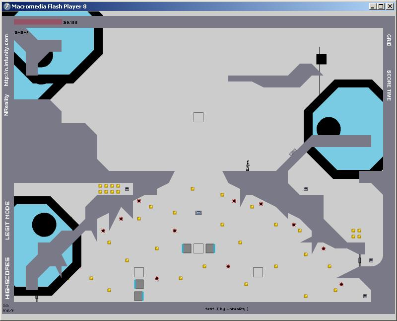

map 120348



Heh, fooling around with the laser:
[Kind of Drone (0=zap, 1=laser, 2=chaingun)],[Attribute Being Changed (r=resize, Rest are Unknown)],[Degree of Change (9=Default Size)]#Examples:
so i guess its public knowledge now?
anyway, i made a map with it - http://numa.notdot.net/map/120397
can you change the color????

as cool as this is, i don't really want to use it in my maps, it kinda ruins the simplicity of the games, and the levels could not work at all if you played them in Nv1.4.
as cool as this is, i don't really want to use it in my maps, it kinda ruins the simplicity of the games, and the levels could not work at all if you played them in Nv1.4.
to have several effects put together (I haven't tested it tho):That works. Here is the proof. It mixes chaingun a ~3 second pre fire delay with a super fast gun.
0,r,20;1,r,5;2,r,100
I haven't really tested them tho.... gotta go out now
You can't post this whilst I'm asleep! Appalling!
...Is there any way to determine between homing and non-homing zap drones?

Another tiny drone experiment. You can stand between the smallest ones.
http://numa.notdot.net/map/120504

Another tiny drone experiment. You can stand between the smallest ones.And suddenly all the drones loaded normal-sized for me. They were back to crazy once I rebooted NReality, though.
http://numa.notdot.net/map/120504
Any chance at huge or oddly-shaped thwumps?


Simplicty is changing quickly.simplicity is dead.
. clever guy .
is this real or is it a fake?
cant really tell.
looks awesome though.
. nice .

I decided that it was time for a centralized description of NReality mods, so I made one.
http://n.wikia.com/wiki/List_of_NReality_Mods
Hopefully people find it useful.
Also: the chaingun turret!

By the way that page missed the most recent update of _xscale, _yscale, _alpha and _colorI've already made the update. I just didn't remember to put it in the first version.
I'm adding rotational laser drone as in N+
it's 50% done
edited: omg omg omg omg omg omg omg omg omg omg 75% done

This is unbelievable. I love what you've added into N.
On a side note, why is Nreality so temperamental? Yesterday morning I loaded player_03's Inversion in Nreality and beat it. Later, in the evening, I turned on Nreality again and loaded Inversion. N jumped normally, making the level impossible.
What's up with this? Why do the mods randomly work/not work?
")
I really need you guys to help me testing the attributes of the object mods...
let me know which attributes work and which not
I really need you guys to help me testing the attributes of the object mods...
let me know which attributes work and which not
Quote: Yeah.... About that., July 05, 2008 07:37 pmIf you set "||||4,stiff,?" too high, the bounceblock dissapears when you touch it, so you should fix that.
Most _color mods work fine, but when i try and make it a shade of grey, it doesn't change.
Quote: Yeah.... About that., July 05, 2008 07:37 amIf you set "||||4,stiff,?" too high, the bounceblock dissapears when you touch it, so you should fix that.
The point of the mods is to be able to change the game's variables to anything and see its response (and then use it to make weird maps).
The point of the mods is to be able to change the game's variables to anything and see its response (and then use it to make weird maps).Not really use the mods to make weird maps
map like http://nmaps.net/130041 and http://nmaps.net/120541 used the mod but still give some original N feelings... I like these maps most
and map like http://nmaps.net/129689 is quite creative and I still feel like its a N level